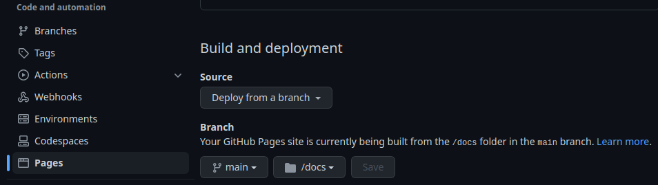
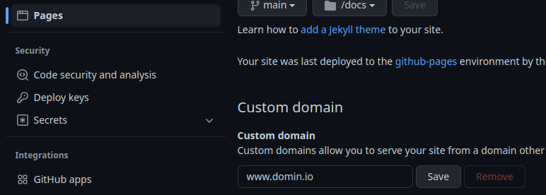

Introducción a GitHub Pages
Son muchos los proyectos que disponen de documentación para su uso. Atendiendo a los recursos, es posible que el sitio web del proyecto lo cree un diseñador o bien haya que recurrir a opciones más asequibles como GitHub Pages. Son menos atractivas visualmente, pero mucho más rápidas y económicas de crear.
Al finalizar, sabrá:
-
Qué es GitHub Pages.
-
Qué es Jekyll.
-
Cómo configurar y crear sitios webs estáticos servidos por GitHub Pages.
-
Cómo configurar un sitio web transformable por Jekyll.
-
Cómo personalizar el dominio en el que se publicará el sitio web.
-
Cómo configurar GitHub Pages para que sirva nuestro sitio mediante HTTPS.
-
Qué evento de GitHub Actions se genera cada vez que se publica el sitio en GitHub Pages.
Introducción
GitHub Pages es un servicio de alojamiento de webs estáticas ofrecido por GitHub. Dispone de capa gratuita y de pago, permitiendo así utilizar la que mejor se adapte a nuestras necesidades. Recordemos que un sitio web estático (static website) es aquel cuyo contenido no se transforma en el servidor web; se envía tal cual a los clientes. Debido a sus limitaciones, se suele utilizar para publicar libros, documentación de proyectos, pequeños blogs o webs estáticas muy sencillas.
Entre las empresas o proyectos que usan GitHub Pages, encontramos Accenture, Airbnb, Express, GitHub, Jekyll, Naciones Unidas, Netflix, Slack, Udemy y webpack.
Atendiendo a quién genera este sitio web, en GitHub Pages, podemos distinguir entre sitio web Jekyll o sitio web pregenerado.
Un sitio web Jekyll (Jekyll website) es aquel que genera GitHub Pages automáticamente. En concreto, el sitio web debe redactarse en Markdown y/o HTML; GitHub Pages utiliza Jekyll, https://jekyllrb.com, para transformarlo automáticamente en un sitio web HTML que es finalmente lo que se publica. En cambio, un sitio web pregenerado (pre-generated website) es aquel que ya está en HTML. En este segundo caso, podemos crear el sitio directamente en HTML o bien podemos utilizar GitHub Actions con otro generador como, por ejemplo, Hugo.
En ambos casos, el contenido del sitio web se debe alojar en un repositorio Git específico, cuyo nombre debe ser nombreUsuario.github.io. Si estamos usando la capa gratuita de GitHub, el repositorio debe ser público; bajo capa de pago, puede ser público o privado. El sitio se encontrará disponible en el dominio homónimo, es decir, en nombreUsuario.github.io. Por suerte, GitHub Pages permite redirigir un dominio personalizado como, por ejemplo, domin.io a este subdominio, dando así un aspecto más profesional.
Repositorio de GitHub
Recordemos que todo usuario tiene la opción de publicar un sitio web estático público bajo GitHub Pages, debe hacerlo bajo un repositorio específico nombreCuenta.github.io y, además, este debe configurarse para su publicación en la plataforma. Este repositorio tiene las siguientes restricciones, revíselas en el momento de comenzar a trabajar por si hubieran cambiado con respecto al momento de escribir estas líneas:
-
El repositorio puede tener un tamaño máximo de 1GB.
-
El ancho de banda del sitio es de 100GB mensuales.
-
En caso de un sitio web Jekyll, como máximo se puede reconstruir diez veces/hora. Esta restricción no se aplica a los sitios webs pregenerados.
Configuración del repositorio para su publicación en GitHub Pages
Una vez creado el repositorio, recuerde, con el nombre usuario.github.io, debe configurar GitHub Pages. La configuración es muy similar, tanto si es un sitio autogenerado por Jekyll o pregenerado. Esta configuración se encuentra disponible en las opciones generales del repositorio, concretamente, en Settings > General > Code and automation > Pages. Recuerde que debe tener claro si desea trabajar con un sitio web Jekyll o uno pregenerado.
Sitios webs Jekyll
Lo habitual es el uso de los sitios webs Jekyll, básicamente, porque son fáciles de crear y, en segundo lugar, porque el soporte para sitios webs pregenerados, por ejemplo mediante GitHub Actions, es muy reciente. En el momento de escribir estas líneas, los pregenerados están en modo beta.
Recordemos que un sitio web Jekyll (Jekyll website) es aquel que se encuentra escrito, principalmente, en Markdown y/o HTML y GitHub lo transforma automáticamente a HTML mediante Jekyll. Jekyll no es más que una herramienta que genera sitios webs estáticos. Fue creada por Tom Preston-Werner, fundador de GitHub, y es muy sencilla de utilizar. En nuestro caso, no tenemos más que saber cómo trabajar con Markdown y algunos aspectos básicos de Jekyll, pero no olvide que su invocación la hará automáticamente GitHub cada vez que subamos un cambio a la rama del sitio web.
Entre las organizaciones que utilizan Jekyll, encontramos Agenzia per l’Italia Digitale, GitHub, Netflix y Twitch; y sitios webs como el de OpenSSL, Ruby on Rails, SemVer, el estado de Idaho y el Departamento de Justicia de EE.UU.
Como el repositorio puede tener múltiples directorios, GitHub Pages necesita saber cuál es el que contiene el código del sitio web estático que debe transformar. A este directorio, lo vamos a conocer como el directorio del sitio (website directory) y puede ser la raíz del repositorio (/) o bien el directorio /docs. Personalmente, recomiendo utilizar /. Además del directorio del sitio, también tenemos la rama del sitio (website branch), esto es, la rama del repositorio que GitHub Pages debe publicar. Tanto la rama como el directorio del sitio web deben configurarse explícitamente mediante GitHub, tal y como veremos en breve.
Configuración del repositorio para su publicación en GitHub Pages
Una vez tenemos claro que deseamos publicar el sitio web mediante Jekyll, debemos pasar a configurar el repositorio Git. Esto se hace como sigue:
-
Mostrar la configuración de GitHub Pages del repositorio. Para ello, ir a Settings > General > Code and automation > Pages.
-
Seleccionar Deploy from a branch en Build and deployment > Source. Así, estamos indicando que estamos ante un sitio web Jekyll. Si indicásemos GitHub Actions, estaríamos configurando un sitio web pregenerado por un flujo de GitHub Actions.
-
Elegir la rama y el directorio que contienen el código del sitio web a transformar y cuya transformación será lo que se publique. Por lo general, la rama suele ser master o main; y, en mi caso, el directorio, /.
-
Hacer clic en Save para guardar los cambios realizados.
He aquí un ejemplo ilustrativo de configuración que usa /docs como directorio de sitio en vez de /:

Archivo de configuración _config.yaml
El archivo _config.yaml (_config.yaml file), ubicado en el directorio del sitio, contiene opciones de configuración del sitio como, por ejemplo, el tema de Jekyll a utilizar o el título del sitio web. Consiste en un objeto o mapa, entre cuyas propiedades encontramos:
| Propiedad | Tipo de datos | Descripción |
|---|---|---|
| title | Texto | Título del sitio. |
| tagline | Texto | Breve descripción que se adjunta al título del sitio en el elemento <title>. |
| description | Texto | Descripción del sitio que se adjunta al resultado HTML en un metaelemento <meta name=”description”>. |
| locale | Texto | Idioma del contenido como, por ejemplo, es_ES. |
| url | Texto | URL del sitio como, por ejemplo, https://domin.io. |
| baseurl | Texto | Ruta base en la que comienza el sitio dentro de url. |
| theme | Texto | Nombre del tema a usar como, por ejemplo, jekyll/minima. |
| plugins | Lista | Plugins a usar. |
| exclude | Lista | Archivos o directorios que Jekyll no debe procesar. |
| author | Objeto | Datos del autor del sitio web, entre otras propiedades: name, twitter, picture y url. |
Veamos un ejemplo ilustrativo:
title: Akromio
locale: es_ES
tagline: Suite de automatización para equipos de IT
description: |
Akromio es una suite de automatización de tareas realizadas comúnmente por
desarrolladores de software, administradores, pentesters y otros roles de IT.
baseurl: /
author:
name: Sia Codelabs
twitter: siacodelabs
Estos datos los utilizará Jekyll cada vez que transforme el directorio del sitio a HTML.
Archivos de datos de un sitio web Jekyll
Un archivo de datos (data file) es un archivo, en formato YAML, JSON, CSV o TSV, que contiene datos que podemos referenciar en el contenido y que Jekyll utilizará durante el proceso de transformación. En nuestro caso, vamos a usar YAML, ya que nos sentimos cómodos con él y lo utilizan productos como GitHub Actions, muy utilizado hoy en día para CI/CD. Estos archivos se deben ubicar en el directorio _data (_data directory) del directorio del sitio. Recuerde que el directorio del sitio lo indicamos cuando configuramos GitHub Pages; en nuestro caso, usaremos /.
Los archivos de datos pueden contener cualquier dato, sea un objeto o una lista de elementos. He aquí un ejemplo ilustrativo:
# variable nodejs
nodejs:
version: 18.9
os: Linux
# variable npm
npm:
version: 8.19
En el contenido del sitio web, podemos hacer referencia al valor de una variable mediante una expresión Liquid como la siguiente:
{{ site.data.nombreArchivoDatos.nombreVariable }}
Si el ejemplo anterior se encontrase en un archivo dep.yaml, he aquí un ejemplo ilustrativo de acceso a una de sus variables, más concretamente al campo version de la variable nodejs:
{{ site.data.dep.nodejs.version }}
Subdirectorios de datos de un sitio web Jekyll
El directorio principal de los archivos de datos es _data. Todos los archivos de datos se deben ubicar en este directorio. Si lo deseamos, podemos organizar los archivos de este directorio en subdirectorios. En este caso, cada subdirectorio actuará como un espacio de nombres (namespace), de tal manera que el acceso a las variables definidas en los archivos de datos de ese espacio de nombres se accederán como sigue:
site.data.espacioDeNombres.variable
Variable global site proporcionada por Jekyll
Jekyll proporciona varias variables globales con datos específicos del sitio, la página, el tema u otros aspectos del sitio web. Una de ellas es la variable global de sitio (site global variable) que contiene información sobre el sitio web. Esta variable dispone de varias propiedades, entre las principales encontramos:
| Propiedad | Tipo de datos | Descripción |
|---|---|---|
| time | Texto | Fecha del momento en el que se está generando el sitio web. |
| data | Objeto | Datos ubicados en los archivos de datos, recordemos, aquellos definidos en el directorio _data. |
| pages | Lista | Lista de las páginas que tiene el sitio. |
| collections | Lista | Lista de las colecciones definidas en el archivo de configuración, _config.yaml. |
| posts | Lista | Lista de los artículos que tiene el sitio. |
| url | Texto | URL del sitio según indicado en el archivo de configuración, _config.yaml. |
Las propiedades de configuración, recordemos, las definidas en el archivo _config.yaml, también están disponibles mediante esta variable site.
Flujo de trabajo interno de Jekyll
Cuando se utiliza un sitio web Jekyll, GitHub Pages crea un flujo de GitHub Actions que se encarga de generar el sitio web y publicarlo. Este flujo de trabajo es muy importante tenerlo presente porque hasta que no se ejecute, no se mostrará el sitio web. Por lo tanto, si ha hecho un cambio, sea paciente y espere a que le llegue el turno, se ejecute y termine para verlo.
Se puede consultar en la pestaña Actions del repositorio y su nombre es pages-build-deployment. Es muy útil para saber que los cambios realizados ya se han publicado y para obtener información de un error durante la transformación, por ejemplo, por una mala configuración o un error de sintaxis en Liquid.
Personalización del dominio
Todo sitio web publicado con GitHub Pages está disponible mediante cuenta.github.io. Es posible configurar un dominio personalizado que redirija a este subdominio de github.io. Esto es un proceso en dos pasos. El primero se configura en el servidor de DNS, que puede variar atendiendo a quién nos proporcione este servicio. En segundo lugar, hay que configurar GitHub Pages e indicarle el dominio en cuestión.
Configuración de DNS
En primer lugar, debemos tener claro el dominio personalizado. Atendiendo a si es un subdominio o no lo es, deberemos hacerlo de una manera u otra. Se habla de subdominio cuando tenemos algo como sub.domin.io. Mientras que si lo que deseamos configurar es domin.io, estamos hablando de un dominio raíz.
Lo que hay que hacer es independiente del proveedor del dominio, cómo hacerlo es lo dependiente. Tiene que averiguar cómo trabajar con registros de DNS con su proveedor del dominio y hacer lo que vamos a ver a continuación.
Configuración de un subdominio
Para un subdominio (subdomain), uno que cuelga de otro, hay que crear un registro CNAME (CNAME record), el cual no hace más que indicar que cuando se acceda al dominio hay que acceder realmente al subdominio indicado. Por ejemplo, para configurar el subdominio www.domin.io tendremos que crear un registro CNAME que indique cuenta.github.io.
Configuración de dominio raíz
Un dominio raíz (apex domain) no es más que un dominio que cuelga de una raíz como, por ejemplo, .com, .org, .net, .me, .io, etc., básicamente, lo que compramos a un vendedor de dominios como Google Domains, Hostalia u OVHcloud. En este caso, no hay que crear un registro CNAME sino uno A o AAAA. Con un registro A (A record) o un registro AAAA (AAAA record) se indica la dirección IP asociada al dominio indicado. Observe que con CNAME se crea un alias con el que se referencia a otro dominio; en cambio con A o AAAA lo que hacemos es indicar exactamente la dirección IP del dispositivo asociado a ese nombre de dominio. En este caso, hay que saber cuáles son las IPs de los servidores de GitHub Pages. En el momento de escribir estas líneas, se pueden utilizar las siguientes:
| Protocolo IP | Registro | Direcciones posibles |
|---|---|---|
| IPv4 | A | 185.199.108.153, 185.199.109.153, 185.199.110.153, 185.199.111.153 |
| IPv6 | AAAA | 2606:50c0:8000::153, 2606:50c0:8001::153, 2606:50c0:8002::153, 2606:50c0:8003::153 |
El registro A se utiliza para la versión 4 del protocolo IP; mientras que para la versión 6, se usa AAAA.
Así pues, lo que haremos es crear un registro A y AAAA para cada una de las posibles direcciones IP de GitHub Pages. Por ejemplo, si deseamos configurar el dominio domin.io, tendremos que crear los siguientes registros de DNS, si tenemos en cuenta las direcciones anteriores:
| Protocolo | Dominio | Registro | Dirección de IP |
|---|---|---|---|
| IPv4 | domin.io | A | 185.199.108.153 |
| IPv4 | domin.io | A | 185.199.109.153 |
| IPv4 | domin.io | A | 185.199.110.153 |
| IPv4 | domin.io | A | 185.199.111.153 |
| IPv6 | domin.io | AAAA | 2606:50c0:8000::153 |
| IPv6 | domin.io | AAAA | 2606:50c0:8001::153 |
| IPv6 | domin.io | AAAA | 2606:50c0:8002::153 |
| IPv6 | domin.io | AAAA | 2606:50c0:8003::153 |
Es posible configurar www.domin.io para que haga referencia a domin.io con un registro CNAME; y, finalmente, domin.io para que apunte a los servidores de GitHub Pages con registros A y AAAA.
Tiempo de vida de los registros
Los registros CNAME, A y AAAA tienen lo que se conoce como un tiempo de vida (time-to-live o TTL), un intervalo de tiempo durante el que los dispositivos pueden retener esos datos en sus cachés sin necesidad de volver a consultar el servidor de DNS. Esto reduce las consultas a los servidores de DNS y mejora la latencia cuando se obtiene la información directamente de nuestra caché de DNS. Esto quiere decir que si cambia algo, los dispositivos clientes que tengan el registro cacheado no podrán ver ese cambio hasta que haya pasado este tiempo de expiración. Se mide en segundos y se suele fijar 3600, pero puede hacerlo más corto o largo según sus necesidades.
Comprobación de la configuración
Una vez configurado el servidor de DNS en nuestro proveedor, lo siguiente es hacer una pequeña prueba para ver que las cosas funcionan. Lo más fácil es hacer un ping:
$ ping domin.io
Si algo no va bien, puede utilizar cualquier herramienta que sea capaz de consultar el registro de DNS del dominio como, por ejemplo, dig:
$ dig domin.io
Configuración de GitHub Pages
Una vez configurado el registro de DNS para que referencie a GitHub Pages, lo siguiente es ir a la configuración de GitHub Pages del repositorio e indicarle el dominio personalizado, es decir, desde el que accederán los usuarios:
-
Ir a Settings > General > Code and automation > Pages del repositorio.
-
Escribir el dominio en Custom domain:

-
Hacer clic en Save para guardar los cambios.
Archivo CNAME
Cuando se publica un sitio web estático en GitHub Pages desde una rama del repositorio Git, al configurar GitHub Pages, se crea automáticamente el archivo CNAME (CNAME file) en la raíz del repositorio, cuyo contenido es el nombre del dominio personalizado. Si se publica el sitio web mediante GitHub Actions, este archivo no se crea.
Configuración de HTTPS
Por seguridad, se recomienda que el sitio web servido por GitHub Pages sea siempre bajo HTTPS. Recordemos que HTTPS (HTTP Secure) es una extensión del protocolo HTTP que garantiza las comunicaciones seguras. Aunque el sitio web no contenga datos privados, es buena práctica que se sirva siempre por HTTPS. Su configuración es como sigue:
-
Ir a la configuración de GitHub Pages del repositorio, Settings > General > Code and automation > Pages.
-
En la sección Custom domain, seleccionar Enforce HTTPS.
Cuando esta opción se encuentra seleccionada, GitHub Pages sólo servirá el sitio web mediante HTTPS.
HTTPS requiere que el servidor disponga de un certificado digital. Un certificado digital (digital certificate) es un documento digital que proporciona información sobre algo como, por ejemplo, una persona, una entidad o un servidor. Estos certificados son emitidos por entidades conocidas formalmente como autoridades de certificación (certificate authority, CA). Eso significa que, si configuramos HTTPS en GitHub Pages, necesitamos un certificado para que los clientes puedan comunicarse con nuestro sitio de manera segura. Por suerte, GitHub Pages solicita, para nuestro sitio, un certificado a Let’s Encrypt y lo almacena. Let’s Encrypt, https://letsencrypt.org, es una organización sin ánimo de lucro que certifica, de manera gratuita, un dominio web. Nada más, ni su propiedad ni ninguna otra cosa. Entre sus patrocinadores encontramos organizaciones como Cisco, GitHub, IBM, Mozilla, OVHcloud y Red Hat. Lo que hace GitHub es ponerse en contacto, por nosotros, con Let’s Encrypt, guardar el certificado y proporcionarlo a los clientes cuando abren conexión con nuestro dominio personalizado.
Evento de GitHub Actions relacionado con GitHub Pages
GitHub genera el evento page_build (page_build event) cada vez que se realiza una publicación en GitHub Pages. No tiene propiedades extras como otros eventos. He aquí un ejemplo ilustrativo de su configuración en un flujo de trabajo de GitHub Actions:
on: page_build
Por ejemplo, puede utilizarlo para generar una notificación automática de un cambio en su sitio web.